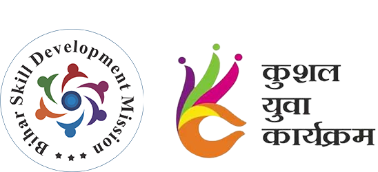
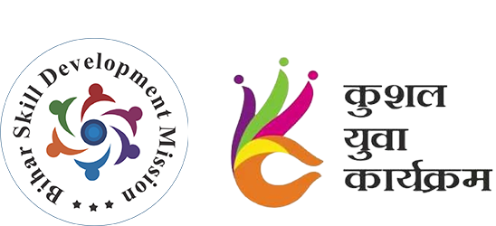
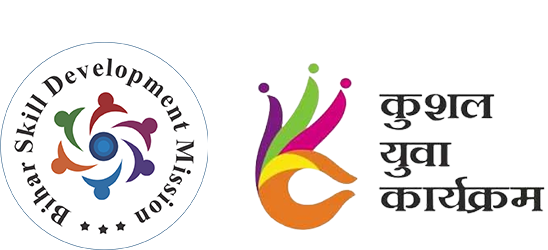
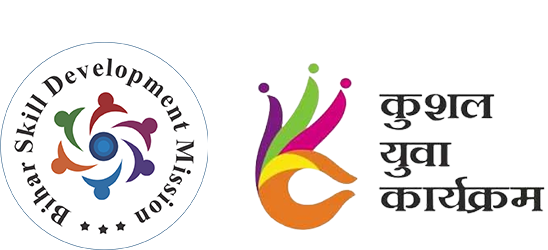

Kushal Yuva Program (KYP) is a part of one of the “7 commitments” namely “Aarthik Hal, Yuvaon ko Bal”.
This program is targeted at all aspirants in the age group of 15-28 years (Age limit for SC/ST, OBC & People with Disabilities is as follows: SC/ST - 33 years, OBC - 31 years, PwD - 33 years), who have passed at least 10th Class irrespective of their having attained higher education or their currently pursuing higher education.
Through this program, BSDM intends to enhance the employability of these youth of Bihar.
Basic Computer Skills
Microsoft Office Applications
Job Readiness Training
Workplace Etiquette & Communication
Language & Literacy Training
Soft Skills for a Better Future
Age Criteria: Candidates aged 15-28 years are eligible. Age limit extensions: SC/ST - 33 years, OBC - 31 years, PwD - 33 years.
Educational Qualification: Minimum qualification required is 10th pass. Candidates can apply regardless of whether they are currently pursuing or have completed any higher education course.
Mandatory Training: Youth aged 20-25 years receiving self-help allowance must complete training under the "Kushal Yuva Program."
MANISH ENTERPRISES
Contact Person: Manish Kumar
Address: RAGOPUR, BIHTA, PATNA
Contact: [Add phone/email]
GST No: 10DWBPK2020J2Z7